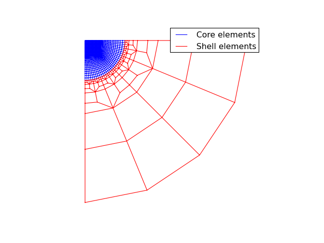
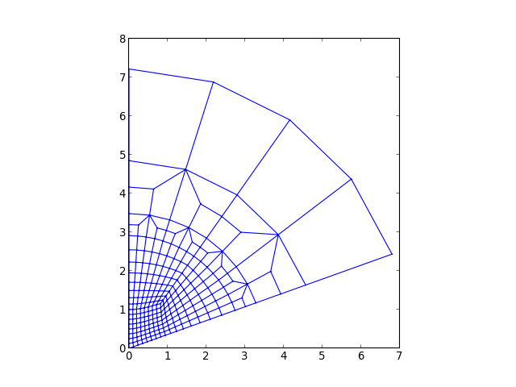
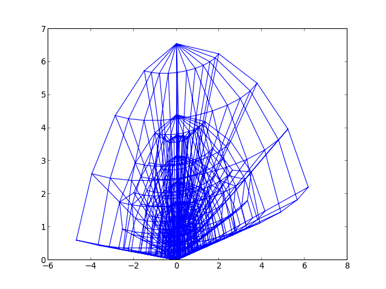
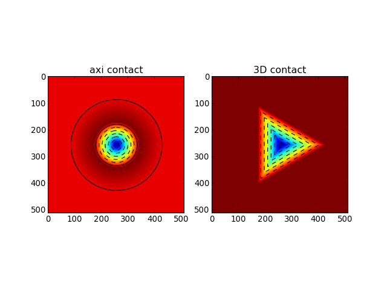
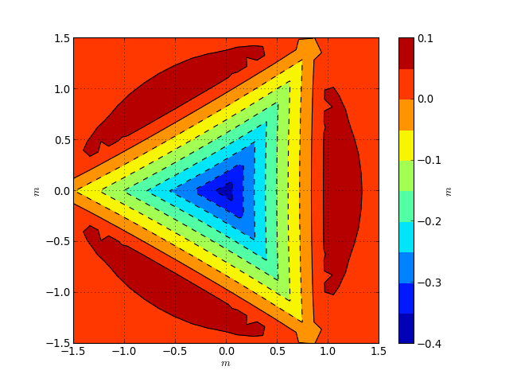
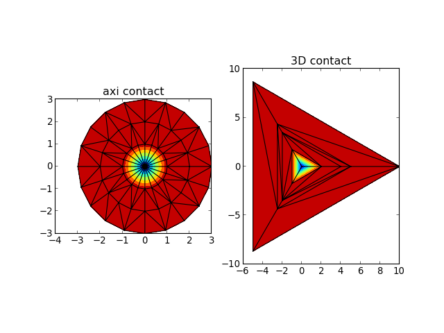
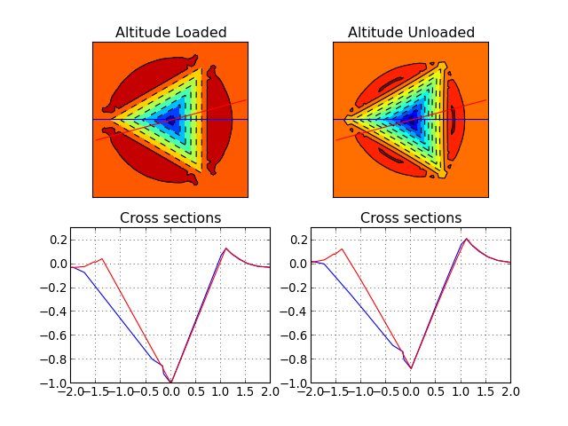
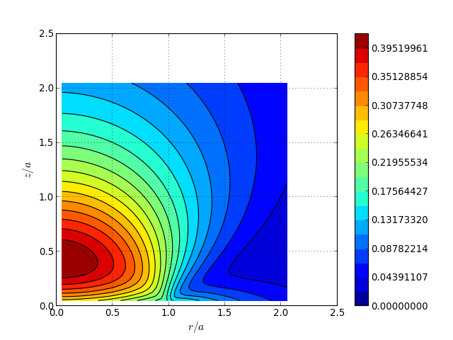
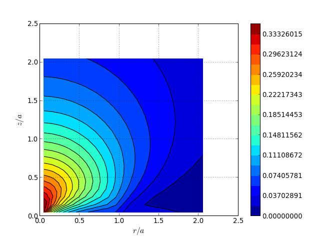

Indentation¶
Indentation simulation tools
Indentation meshes¶
ParamInfiniteMesh function¶
- abapy.indentation.ParamInfiniteMesh(Na=10, Nb=10, l=1.0, core_name='CAX4', add_shell=True, shell_name='CINAX4', dti='I', dtf='d')[source]¶
Returns a mesh dedicated to 2D/Axisymmetrical indentation. It is composed of a core of quadrangle elements and a shell of infinite elements. The core is divided into three zones. The center is core_1, the right is core_2 and the bottom is core_3. Core_1 is a Na x Na square mesh whereas core_2 and core_3 are respectively Nb x Na and Na x Nb structured meshes that have been transformed to be connected and guaranty element size progression.
Parameters: - Na (int > 1) – number of elements per side in core_1
- Nb (int > 0) – number of radial elements in core_2 and core_3
- l (float > 0) – core_1 size
- core_name (string) – element name in core
- add_shell (boolean) – True if the shell of infinite elements is to be used, False if not.
- shell_name (string) – element name in shell, should be infinite
IndentationMesh function¶
- abapy.indentation.IndentationMesh(Na=8, Nb=8, Ns=4, Nf=2, l=1.0, name='CAX4', dtf='f', dti='I')[source]¶
An indentation oriented full quad mesh.
Parameters: - Na (int) – number of elements along x axis in the finely meshed contact zone. Must be power of 2.
- Nb (int) – number of elements along y axis in the finely meshed contact zone. Must be power of 2.
- Ns (int) – number of radial elements in the shell.
- Nf (int) – number of orthoradial elements in each half shell. Must be > 0.
- l (float.) – length of the square zone.
- name (string) – name of the elements. Note that this mesh if full quad so only one name is required.
- dtf (string) – float data type in array.array, ‘d’ for float64 or ‘f’ for float32.
- dti (string) – int data type in array.array, ‘I’ for unsignedint32 or ‘H’ for unsignedint16 (dangerous in some cases).
from abapy.indentation import IndentationMesh from matplotlib import pyplot as plt Na = 16 # Elements along x axis in the square zone Nb = 16 # Elements along y axis in the square zone Ns = 2 # Radial number of elements in the shell Nf = 2 # Minimal number of orthoradial elements in heach half shell l = 1. # Size of the square zone name = 'CAX4' # Name of the elements m = IndentationMesh(Na = Na, Nb = Nb, Ns = Ns, Nf= Nf, l = l, name = name) m_core = m['core_elements'] m_shell = m['shell_elements'] x_core, y_core, z_core = m_core.get_edges() x_shell, y_shell, z_shell = m_shell.get_edges() plt.figure(0) plt.clf() plt.axis('off') plt.grid() xlim, ylim, zlim = m.nodes.boundingBox() plt.gca().set_aspect('equal') plt.xlim(xlim) plt.ylim(ylim) plt.plot(x_core,y_core, 'b-', label = 'Core elements') plt.plot(x_shell,y_shell, 'r-', label = 'Shell elements') plt.legend() plt.show()
(Source code, png, hires.png, pdf)

{kind=link}
{kind=link}
Indenters¶
RigidCone2D class¶
- class abapy.indentation.RigidCone2D(half_angle=70.3, width=10.0, summit_position=(0.0, 0.0))[source]¶
A rigid cone usable in 2D and Axisymmetric simulations.
Parameters: - half_angle (float > 0.) – half_angle in DEGREES.
- width (float > 0.) – width of the indenter
- summit_position (tuple or list containing two floats.) – position of the summit in a 2D space.
- apply_displacement(disp)[source]¶
Applies a displacement field to the indenter.
Parameters: disp (abapy.postproc.VectorFieldOutput instance.) – displacement field (with only one location).
- get_edges()[source]¶
Returns a plotable version of the indenter usable directly in matplotlib.pyplot.
Return type: x and y lists
- set_half_angle(half_angle=70.3)[source]¶
Sets the half angle of the indenter. Default is equivalent to modified Berkovich indenter in volume.
Parameters: half_angle (float > 0.) – half_angle in DEGREES.
DeformableCone2D class¶
- class abapy.indentation.DeformableCone2D(half_angle=70.3, Na=4, Nb=4, Ns=4, Nf=2, l=1.0, mat_label='INDENTER_MAT', summit_position=(0.0, 0.0), rigid=False)[source]¶
A deformable cone usable in 2D and Axisymmetric simulations.
Parameters: - half_angle (float > 0.) – half_angle in DEGREES.
- Na (int) – number of elements along x axis in the finely meshed contact zone. Must be power of 2.
- Nb (int) – number of elements along y axis in the finely meshed contact zone. Must be power of 2.
- Ns (int) – number of radial elements in the shell.
- Nf (int) – number of orthoradial elements in each half shell. Must be > 0.
- l (float.) – length of the square zone.
- mat_label (any material class instance) – label of the constitutive material of the indenter.
- summit_position (tuple or list containing two floats.) – position of the summit in a 2D space.
- rigid – True if indenter is to be rigid or False if the indenter is to be deformable. If the rigid behavior is chosen, the material label will be necessary but will not influence the results of the simulation.
from abapy.indentation import DeformableCone2D from matplotlib import pyplot as plt c = DeformableCone2D(Na =8, Nb = 8, Ns = 1) f = open('DeformableCone2D.inp', 'w') f.write(c.dump2inp()) f.close() x,y,z = c.mesh.get_edges() plt.plot(x,y) plt.gca().set_aspect('equal') plt.show()
(Source code, png, hires.png, pdf)
- apply_displacement(disp)[source]¶
Applies a displacement field to the indenter.
Parameters: disp (abapy.postproc.VectorFieldOutput instance.) – displacement field (with only one location).
- get_border(**kwargs)[source]¶
Returns a plotable version of the border of the indenter usable directly in matplotlib.pyplot.
Return type: x and y lists
- get_edges(**kwargs)[source]¶
Returns a plotable version of the indenter usable directly in matplotlib.pyplot.
Return type: x and y lists
- set_Na(Na)[source]¶
Sets the Na parameter of the indenter (see IndentationMesh for explanations).
Parameters: Na (int > 1) – Na
- set_Nb(Nb)[source]¶
Sets the Nb parameter of the indenter (see IndentationMesh for explanations).
Parameters: Nb (int > 1) – Nb
- set_Nf(Nf)[source]¶
Sets the Nf parameter of the indenter (see IndentationMesh for explanations).
Parameters: Nf (int > 1) – Nf
- set_Ns(Ns)[source]¶
Sets the Ns parameter of the indenter (see `IndentationMesh for explanations).
Parameters: Ns (int > 1) – Ns
- set_half_angle(half_angle=70.3)[source]¶
Sets the half angle of the indenter. Default is equivalent to modified Berkovich indenter in volume.
Parameters: half_angle (float > 0.) – half_angle in DEGREES.
- set_l(l)[source]¶
Sets the l parameter of the indenter (see ParamInfiniteMesh for explanations)
Parameters: l (float > 0.) – l
- set_mat_label(mat_label)[source]¶
Sets the label of the constitutive material of the indenter.
Parameters: mat_label (string) – mat_label
{kind=link}
{kind=link}
DeformableCone3D class¶
- class abapy.indentation.DeformableCone3D(half_angle=70.3, Na=4, Nb=4, Ns=4, Nf=2, l=1.0, N=4, sweep_angle=45.0, mat_label='INDENTER_MAT', summit_position=(0.0, 0.0), rigid=True, pyramid=False)[source]¶
A deformable cone usable in 3D simulations.
Parameters: - half_angle (float > 0.) – half_angle in DEGREES.
- Na (int) – number of elements along x axis in the finely meshed contact zone. Must be power of 2.
- Nb (int) – number of elements along y axis in the finely meshed contact zone. Must be power of 2.
- Ns (int) – number of radial elements in the shell.
- Nf (int) – number of orthoradial elements in each half shell. Must be > 0.
- l (float.) – length of the square zone.
- N (int.) – Number of sweeped elements.
- sweep_angle – sweep angle.
- mat_label (any material class instance) – label of the constitutive material of the indenter.
- summit_position (tuple or list containing two floats.) – position of the summit in a 2D space.
- rigid – True if indenter is to be rigid or False if the indenter is to be deformable. If the rigid behavior is chosen, the material label will be necessary but will not influence the results of the simulation.
- pyramid (bool) – Sets the indenter as a revolution cone (False) or a pyramid (True). I the case of the pyramid, the half angle becomes the axis to face angle.
For common 3D indenters, following parameters can be used:
Indenter half_angle sweep_angle Berkovich 65.03 60.00 Modified Berkovich 65.27 60.00 Cube Corner 35.26 60.00 Vickers 68.00 45.00 from abapy.indentation import DeformableCone3D from matplotlib import pyplot as plt c = DeformableCone3D(Na =4, Nb = 4, Ns = 1, N = 10, sweep_angle = 120.) c.make_mesh() f = open('DeformableCone3D.vtk', 'w') f.write(c.mesh.dump2vtk()) f.close() x,y,z = c.mesh.get_edges() # Adding some 3D "home made" perspective: zx, zy = .3, .3 for i in xrange(len(x)): if x[i] != None: x[i] += zx * z[i] y[i] += zy * z[i] plt.plot(x,y) plt.show()
(Source code, png, hires.png, pdf)
- apply_displacement(disp)[source]¶
Applies a displacement field to the indenter.
Parameters: disp (abapy.postproc.VectorFieldOutput instance.) – displacement field (with only one location).
- equivalent_half_angle()[source]¶
Returns the half angle (in degrees) of the equivalent cone in terms of cross area and volume. :retype: float
- get_border()[source]¶
Returns a plotable version of the border of the indenter usable directly in matplotlib.pyplot.
Return type: x and y lists
- get_edges()[source]¶
Returns a plotable version of the indenter usable directly in matplotlib.pyplot.
Return type: x and y lists
- set_Na(Na)[source]¶
Sets the Na parameter of the indenter (see IndentationMesh for explanations).
Parameters: Na (int > 1) – Na
- set_Nb(Nb)[source]¶
Sets the Nb parameter of the indenter (see IndentationMesh for explanations).
Parameters: Nb (int > 1) – Nb
- set_Nf(Nf)[source]¶
Sets the Nf parameter of the indenter (see IndentationMesh for explanations).
Parameters: Nf (int > 1) – Nf
- set_Ns(Ns)[source]¶
Sets the Ns parameter of the indenter (see `IndentationMesh for explanations).
Parameters: Ns (int > 1) – Ns
- set_half_angle(half_angle=70.3)[source]¶
Sets the half angle of the indenter. Default is equivalent to modified Berkovich indenter in volume.
Parameters: half_angle (float > 0.) – half_angle in DEGREES.
- set_l(l)[source]¶
Sets the l parameter of the indenter (see ParamInfiniteMesh for explanations)
Parameters: l (float > 0.) – l
- set_mat_label(mat_label)[source]¶
Sets the label of the constitutive material of the indenter.
Parameters: mat_label (string) – mat_label
- set_pyramid(pyramid)[source]¶
Sets the indenter as a revolution cone (False) or a pyramid (True). I the case of the pyramid, the half angle becomes the axis to face angle.
Parameters: pyramid (bool) – True for pyramid, False for revolution (default).
- set_rigid(rigid)[source]¶
Sets the indenter to be rigid (True) or deformable (False).
Parameters: rigid (bool) – True for rigid, False for deformable (default)
{kind=link}
{kind=link}
Indenter miscellaneous¶
- abapy.indentation.equivalent_half_angle(half_angle, sweep_angle)[source]¶
Returns the half angle (in degrees) of the equivalent cone in terms of cross area and volume of a pyramidal indenter. :param half_angle: indenter half angle in degrees :type half_angle: float :param sweep_angle: sweep angle in degrees :type sweep_angle: float :rtype: float
Simulation tools¶
Steps definition¶
- class abapy.indentation.Step(name, disp=1.0, nlgeom=True, nframes=100, fieldOutputFreq=999999, boundaries_3D=False, full_3D=False, rigid_indenter_3D=True, nodeFieldOutput=['COORD', 'U'], elemFieldOutput=['LE', 'EE', 'PE', 'PEEQ', 'S'], mode='bulk')[source]¶
Builds a typical indentation step.
Parameters: - name (string) – step name.
- disp (float > 0.) – displacement.
- nframes (int) – frame number.
- nlgeom (boolean) – nlgeom state.
- fieldOutputFreq (int) – field output frequency
- boundaries_3D (boolean) – 3D or 2D boundary conditions. If 3D is True, then boundary conditions will be applied to the node sets front and back.
: param full_3D: set to True if the model is a complete 3D model without symmetries and then does not need side boundaries. :type full_3D: boolean :param rigid_indenter_3D: Set to True if a 3D indenter is rigid :type rigid_indenter_3D: boolean :param nodeFieldOutput: node outputs. :type nodeFieldOutput: string or list of strings :param elemFieldOutput: node outputs. :type elemFieldOutput: string or list of strings
- Step.set_displacement(disp)[source]¶
Sets the displacement.
Parameters: disp (float > 0.) – displacement.
- Step.set_nframes(nframes)[source]¶
Sets the number of frames.
Parameters: nframes (int) – frame number.
- Step.set_fieldOutputFreq(freq)[source]¶
Sets the field output period.
Parameters: freq (int) – field output frequency
- Step.set_nodeFieldOutput(nodeOutput)[source]¶
Sets the node field output to be recorded.
Parameters: nodeOutput (string or list of strings) – node outputs.
Inp builder¶
Simulation manager¶
- class abapy.indentation.Manager(workdir='', abqlauncher='abaqus', samplemesh=None, indenter=None, samplemat=None, indentermat=None, friction=0.0, steps=None, is_3D=False, simname='indentation', files2delete=['sta', 'sim', 'prt', 'odb', 'msg', 'log', 'dat', 'com', 'inp', 'lck', 'pckl'], abqpostproc='abqpostproc.py')[source]¶
The spirit of the simulation manager is to allow you to work at a higher level. Using it allows you to define once and for all where you work, where Abaqus is, it fill manage subprocesses (Abaqus, Abaqus python) automatically. It is particularly interresting to perform parametric simulation because you can modify one parameter (material property, inenter property, ...) and keep all other parameters fixed and rerun directly the simulation process without making any mistake.
Note
This class is still under developpement, important changes may then happen.
Parameters: - workdir (string) – work directory where simulation is to be run.
- abqlauncher (string) – abaqus launcher or path to it. Take care about aliases under linux because they often don’t work under non interactive shells. A direct path to the launcher may be a good idea.
- samplemesh (abapy.mesh.Mesh instance or None) – mesh to be used by MakeInp, None will let MakeInp use it’s own default.
- indenter (indenter instance or None) – indenter to be used by MakeInp, None will let MakeInp use it’s own default.
- samplemat (material instance or None) – sample material to be used by MakeInp, None will let MakeInp use it’s own default.
- indentermat (material instance or None) – indenter material to be used by MakeInp, None will let MakeInp use it’s own default.
- steps (list of Step instances.) – steps to use during the test.
- is_3D (Bool) – has to be True if the simulation is 3D, else must be False.
- simname (string) – simulation name used for all files.
- files2delete (list of strings.) – file types to delete when cleaning work directory.
from abapy.indentation import Manager, IndentationMesh, Step, RigidCone2D, DeformableCone2D from abapy.materials import VonMises, Elastic from math import radians, tan import numpy as np import matplotlib.pyplot as plt #--------------------------------------- # Python post processing function: # Role: data extraction from odb is performed in Abaqus python but nothing more. A regular Python version featuring numpy/scipy and matplotlib is so much better to perform custom post processing. That's why we do it in two steps: what cannot be done out of abaqus is done in abaqus, everything else is performed outside. def pypostproc(data): if data['completed']: return data else: print '<Warning: Simulation aborted, check .msg file for explanations.>' return data #--------------------------------------- # Defining test parameters: Na, Nb, Ns, Nf = 16,16, 16, 2 half_angle = 70.29 rigid_indenter = False # Sets the indenter rigid of deformable mesh = IndentationMesh(Na = Na, Nb = Nb, Ns = Ns, Nf = Nf) # Chosing sample mesh #indenter = RigidCone2D(half_angle = 70.3) # Chosing indenter indenter = DeformableCone2D(half_angle = half_angle, Na = Na, Nb = Nb, Ns=Ns, Nf=Nf, rigid = rigid_indenter) E = 1. # Young's modulus sy = E * .01 # Yield stress samplemat = VonMises(labels = 'SAMPLE_MAT', E = E, sy = sy) # Sample material indentermat = Elastic(labels = 'INDENTER_MAT', E = E) max_disp = .3 * tan(radians(70.3))/tan(radians(half_angle)) nframes = 200 steps = [ # Steps Step(name='loading0', nframes = nframes, disp = max_disp/2.), Step(name='loading1', nframes = nframes, disp = max_disp), Step(name = 'unloading', nframes = nframes, disp = 0.)] #--------------------------------------- # Directories: absolute pathes seems more secure to me since we are running some 'rm'. workdir = 'workdir/' abqlauncher = '/opt/Abaqus/6.9/Commands/abaqus' simname = 'indentation' abqpostproc = 'abqpostproc.py' #--------------------------------------- # Setting simulation manager m = Manager() m.set_abqlauncher(abqlauncher) m.set_workdir(workdir) m.set_simname(simname) m.set_abqpostproc(abqpostproc) m.set_samplemesh(mesh) m.set_samplemat(samplemat) m.set_indentermat(indentermat) m.set_steps(steps) m.set_indenter(indenter) m.set_pypostprocfunc(pypostproc) #--------------------------------------- # Running simulation and post processing #m.erase_files() # Workdir cleaning m.make_inp() # INP creation #m.run_sim() # Running the simulation #m.run_abqpostproc() # First round of post processing in Abaqus data = m.run_pypostproc() # Second round of custom post processing in regular Python #--------------------------------------- if data['completed']: # Ploting results step2plot = 0 Nlevels = 200 plt.figure(0) # Ploting load vs. disp curve plt.clf() ho = data['history'] F = -ho['force'] h = -ho['disp'] C = (F[1]/h[1]**2).average() F_fit = C * h **2 plt.plot(h.plotable()[1], F.plotable()[1], 'b-',label = 'Simulated curve', linewidth = 1.) plt.plot(h[0,1].plotable()[1], F_fit[0,1].plotable()[1],'r-', label = 'fitted loading curve', linewidth = 1.) plt.xlabel('Displacement $h$') plt.ylabel('Force $P$') plt.legend() plt.grid() plt.savefig(workdir + simname + '_load-disp.png') # Ploting deformed shape plt.clf() plt.gca().set_aspect('equal') plt.axis('off') fo = data['field'] #stress = fo['S'][step2plot].vonmises() stress = fo['S'][step2plot].pressure() if 'Sind' in fo.keys(): #ind_stress = fo['Sind'][step2plot].vonmises() ind_stress = fo['Sind'][step2plot].pressure() smax= max( max(stress.data), max(ind_stress.data)) smin= min( min(stress.data), min(ind_stress.data)) #levels = [(n+1)/float(Nlevels)*smax for n in xrange(Nlevels)] levels = np.linspace(smin, smax, Nlevels) field_flag = r'$\sigma_{eq}$' disp = fo['U'][step2plot] ind_disp = fo['Uind'][step2plot] indenter.apply_displacement(ind_disp) # Applies the displacement to the indenter. #plt.plot(xbi,ybi,'k-') mesh.nodes.apply_displacement(disp) # This Nodes class method allows to deform a Nodes instance (and the Mesh instance it's nested in by the way) using a VectorFieldOutput. This allows very easy mesh tuning and deformed shape ploting. xlim, ylim, zlim = mesh.nodes.boundingBox() # This little method allows nicer ploting producing a bounding box with a little gap around the mesh. This avoids the very tight boxes pyplot tends to use which cut thick lines on the border of the mesh. xmin, xmax = 0., 2. ymin, ymax = -2., 2. plt.xlim([xmin, xmax]) plt.ylim([ymin, ymax]) x, y, z, tri = mesh.dump2triplot() # This method translates the whole mesh in matplotlib.pyplot.triplot syntax: x coords, y coords, (z coords useless here but can be nice for perspective effects) and label less connectivity. xi, yi, zi, trii = indenter.mesh.dump2triplot() xe, ye, ze = mesh.get_edges(xmin = xmin, xmax = xmax, ymin = ymin, ymax = ymax) xb, yb, zb = mesh.get_border(xmin = xmin, xmax = xmax, ymin = ymin, ymax = ymax) xei, yei, zei = indenter.mesh.get_edges(xmin = xmin, xmax = xmax, ymin = ymin, ymax = ymax) # Gives us a wireframe indenter representation. xbi, ybi, zbi = indenter.mesh.get_border(xmin = xmin, xmax = xmax, ymin = ymin, ymax = ymax) # Gives us the border of the indenter. plt.plot(xe,ye,'-k', linewidth = 0.5) # Mesh ploting. plt.plot(xb,yb,'-k', linewidth = 1.) # Sample border ploting. plt.plot(xei,yei,'-k', linewidth = 0.5) # Mesh ploting. plt.plot(xbi,ybi,'-k', linewidth = 1.) # Sample border ploting. grad = plt.tricontourf(x, y, tri, stress.data, levels) # Gradiant plot, Nlevels specifies the number of levels. plt.tricontourf(xi,yi,trii, ind_stress.data, levels) #plt.tricontour(xi,yi,trii, ind_stress.data, levels, colors = 'black') cbar = plt.colorbar(grad) cbar.ax.set_ylabel(field_flag, fontsize=20) #plt.tricontour(x, y, tri, stress.data, levels, colors = 'black') # Isovalue plot which make gradiant plot clearer in my (humble) opinion. #plt.show() plt.savefig(workdir + simname + '_field.png')
Gives:


Note
In order to used abaqus Python, you have to build a post processing script that is executed in abaqus python. Here is an example abqpostproc.py:
Note
This class is still unfinished, post processing part remains unwritten (LC, April 12 2012)
Settings¶
- Manager.set_simname(simname)[source]¶
Sets simname.
Parameters: simname (string) – simulation name that is used to name simulation files.
- Manager.set_workdir(workdir)[source]¶
Sets work directory
Parameters: workdir (string) – relative or absolute path to workdir where simulations are run.
- Manager.set_abqlauncher(abqlauncher)[source]¶
Sets Abaqus launcher :param abqlauncher: alias, relative path or absolute path to abaqus launcher. :type abqlaucher: string
- Manager.set_samplemesh(samplemesh)[source]¶
Sets sample mesh.
Parameters: samplemesh (abapy.mesh.Mesh instance) – sample mesh.
- Manager.set_indenter(indenter)[source]¶
Sets indenter.
Parameters: indenter (instance of any indenter class) – indenter to be used.
- Manager.set_samplemat(samplemat)[source]¶
Sets sample material.
Parameters: samplemat (instance of any material class) – core material.
- Manager.set_steps(steps)[source]¶
Sets steps
Parameters: steps (list of Steps instances) – description of steps.
- Manager.set_files2delete(files2delete)[source]¶
Sets files to delete when cleaning.
Parameters: files2delete (list of strings.) – files types to be deleted when cleaning workdir.
Indentation post-processing¶
Contact Data¶
- class abapy.indentation.ContactData(repeat=3, is_3D=False, dtf='f')[source]¶
ContactData class aims to store and proceed all contact related data:
- Position of nodes involved in the contact relationship.
- Contact pressure on these nodes.
This class can be used to perform various tasks:
- Find contact shape.
- Compute contact area.
- Find contact contour.
- Produce matrix (AFM-like) images using the SPYM module.
Parameters: - repeat (int > 0) – this parameter is only used in the case of 3D contact. Due to symmetries, only a portion of the problem is computed. To get back to complete problem, a symmetry has to be performed and then a given number of copies of the result, this number is repeat. For example, to simulate a Vickers 4 sided indenter indentation, you will compute only 1 / 8 of the problem. So after a symmetry, you will need 4 copies of the result, the repeat = 4. To summarize, repeat is the number of faces of the indenter.
- is_3D (bool) – True for 3D contact, False for axisymmetric contact.
- dtf (string) – array.array data type for floats, ‘f’ for 32 bit float, ‘d’ for 64 float.
import numpy as np from abapy.indentation import ContactData X = np.linspace(-3., 3., 512) Y = np.linspace(-3., 3., 512) X, Y = np.meshgrid(X, Y) # Axi cd = ContactData() x = [0, 1, 2, 10] alt = [-1,.1, 0, 0] press = [1, 0, 0, 0] cd.add_data(x, altitude = alt, pressure = press) Alt_axi, Press_axi = cd.interpolate(X, Y, method ='linear') area = cd.contact_area() # 3D cd = ContactData(repeat = 3, is_3D = True) k = np.cos(np.radians(60)) p = np.sin(np.radians(60)) x = [0, 4, 10, k*4, k*10] y = [0, 0, 0, p*4, p*10] alt = [-1, 0, 0, 0, 0] cd.add_data(x, altitude = alt) Alt_3D, Press_3D = cd.interpolate(X, Y, method ='linear') from matplotlib import pyplot as plt fig = plt.figure() plt.clf() ax1 = fig.add_subplot(121) grad = plt.imshow(Alt_axi) plt.contour(Alt_axi, colors= 'black') plt.title('axi contact') ax1 = fig.add_subplot(122) grad = plt.imshow(Alt_3D) plt.contour(Alt_3D, colors= 'black') plt.title('3D contact') plt.show()
(Source code, png, hires.png, pdf)
- add_data(coor1, coor2=0.0, altitude=0.0, pressure=0.0)[source]¶
Adds data to a ContactData instance.
Parameters: - coor1 (float or list like) – radial position in the axisymmetric case or in plane position first coordinate in the 3D case.
- coor2 (float of list like) – orthoradial position in the axisymmetric case of second in plane coordinate in the 3D case.
- altitude (float or list like) – out of plane position.
- pressure (float or list like) – normal contact pressure.
- contact_area(delaunay_disp=None)[source]¶
Returns the cross area of contact using the contact pressure field. The contact area is computed using a Delaunay triangulation of the available data points. This triangulation can be oriented using the delaunay_disp option (use very carefuly).
- export2spym(lx, ly, xc=0.0, yc=0.0, nx=256, ny=256, xy_unit='m', alt_unit='m', press_unit='Pa', axi_repeat=100, delaunay_disp=None, method='linear')[source]¶
Exports data to spym.generic.Spm_image format.
Parameters: - lx (float) – length on x axis
- ly (float) – length on y axis
- xc (float) – position of the center of the image on the x axis
- yc (float) – position of the center of the image on the y axis
- nx (uint) – x resolution
- ny (uint) – y resolution
- xy_unit (str) – xy unit
- alt_unit (str) – altitude unit
- press_unit (str) – contact pressure unit
See get_3D_data for other params.
from abapy.misc import load import numpy as np import matplotlib.pyplot as plt # In this case, a 3D FEM simulation has beed performed and the results are stored in the file ``ContactData.pckl``. See ``Get_ContactData`` to understand how this data has been extracted from an Abaqus odb file. out = load('ContactData_berk.pckl') cdl = out[1][-1] # loading cdu = out[2][-1] # unloading hmax = -cdl.min_altitude() l = 7. * hmax alt, press = cdu.export2spym(lx = l, ly = l, nx = 512, ny = 512) alt.dump2gsf('image.gsf') xlabel, ylabel, zlabel = alt.get_labels() X,Y,Z = alt.get_xyz() plt.figure() plt.clf() plt.gca().set_aspect('equal') plt.grid() plt.contourf(X, Y, Z, 10) cbar = plt.colorbar() cbar.set_label(zlabel) plt.contour(X, Y, Z, 10, colors = 'black') plt.xlabel(xlabel) plt.ylabel(ylabel) plt.show()
(Source code, png, hires.png, pdf)
This script also produces a GSF image file, readable by both spym and Gwyddion: image.gsf
- get_3D_data(axi_repeat=100, delaunay_disp=None, crit_dist=1e-05)[source]¶
Returns full 3D data usable for interpolation or for ploting. This method performs all the copy and paste needed to get the complete contact (due to symmetries) and also producec a triangular mesh of the surface using the Delaunay algorithm (via scipy).
Parameters: axi_repeat (int > 0) – number of times axisymmetric profile has to be pasted orthoradially. Return type: 3 arrays points, alt, press and conn from abapy.indentation import ContactData from matplotlib import pyplot as plt # Axi contact cd = ContactData() x = [0, 1, 2, 3] alt = [-1,.1, 0, 0] press = [1, 0, 0, 0] cd.add_data(x, altitude = alt, pressure = press) points_axi, alt_axi, press_axi, conn_axi = cd.get_3D_data(axi_repeat = 20) # 3D contact cd = ContactData(repeat = 3, is_3D = True) k = np.cos(np.radians(60)) p = np.sin(np.radians(60)) x = [0, 4, 10, k*4, k*10] y = [0, 0, 0, p*4, p*10] alt = [-1, 0, 0, 0, 0] cd.add_data(x, altitude = alt) points_3D, alt_3D, press_3D, conn_3D = cd.get_3D_data() fig = plt.figure() plt.clf() ax1 = fig.add_subplot(121) ax1.set_aspect('equal') plt.tricontourf(points_axi[:,0], points_axi[:,1], conn_axi, alt_axi) plt.triplot(points_axi[:,0], points_axi[:,1], conn_axi) plt.title('axi contact') ax1 = fig.add_subplot(122) ax1.set_aspect('equal') plt.tricontourf(points_3D[:,0], points_3D[:,1], conn_3D, alt_3D) plt.triplot(points_3D[:,0], points_3D[:,1], conn_3D) plt.title('3D contact') plt.show()
(Source code, png, hires.png, pdf)

- interpolate(coor1, coor2, axi_repeat=100, delaunay_disp=None, method='linear')[source]¶
Allows general interpolation on the a contact data instance.
Parameters: - coor1 (any list/array of floats) – radial position in the axisymmetric case or in plane position first coordinate in the 3D case.
- coor2 (any list/array of floats) – orthoradial position in the axisymmetric case of second in plane coordinate in the 3D case.
- axi_repeat (int > 0) – number of times axisymmetric profile has to be pasted orthoradially.
from abapy.misc import load import numpy as np from matplotlib import pyplot as plt # In this case, a 3D FEM simulation has beed performed and the results are stored in the file ``ContactData_berk.pckl``. See ``Get_ContactData`` to understand how this data has been extracted from an Abaqus odb file. out = load('ContactData_berk.pckl') cd0 = out[1][-1] # First step data: loading cd1 = out[2][-1] # Second step data: unloading hmax = -cd0.min_altitude() # First let's map altitude and pressure on cartesian grids. x = np.linspace(-2., 2., 256) X, Y = np.meshgrid(x, x) Alt0, Press0 = cd0.interpolate(X, Y, method ='linear') Alt1, Press1 = cd1.interpolate(X, Y, method ='linear') Alt0 = Alt0 / hmax Alt1 = Alt1 / hmax # Now we wan to get some sections of the imprint s = np.linspace(0., 2., 256) s = np.append((-s)[::-1], s) theta0 = np.radians(0.01) theta1 = np.radians(15.) xs0 = np.cos(theta0) * s ys0 = np.sin(theta0) * s xs1 = np.cos(theta1) * s ys1 = np.sin(theta1) * s # Sections under full load Alt0_sec_l, Press0_sec_l = cd0.interpolate(xs0, ys0, method ='linear') Alt1_sec_l, Press1_sec_l = cd0.interpolate(xs1, ys1, method ='linear') Alt0_sec_l = Alt0_sec_l / hmax Alt1_sec_l = Alt1_sec_l / hmax # Sections after unloading Alt0_sec_u, Press0_sec_u = cd1.interpolate(xs0, ys0, method ='linear') Alt1_sec_u, Press1_sec_u = cd1.interpolate(xs1, ys1, method ='linear') Alt0_sec_u = Alt0_sec_u / hmax Alt1_sec_u = Alt1_sec_u / hmax fig = plt.figure() plt.clf() ax1 = fig.add_subplot(221) ax1.set_xticks([]) ax1.set_yticks([]) grad = plt.contourf(X, Y, Alt0, 10) plt.contour(X, Y, Alt0, 10, colors = 'black') plt.grid() plt.plot(xs0, ys0, 'b-') plt.plot(xs1, ys1, 'r-') ax1.set_aspect('equal') plt.title('Altitude Loaded') ax2 = fig.add_subplot(222) ax2.set_xticks([]) ax2.set_yticks([]) grad = plt.contourf(X, Y, Alt1, 10) plt.contour(X, Y, Alt1, 10, colors = 'black') plt.grid() plt.plot(xs0, ys0, 'b-') plt.plot(xs1, ys1, 'r-') ax2.set_aspect('equal') plt.title('Altitude Unloaded') ax3 = fig.add_subplot(223) ax3.set_ylim([-1,0.3]) plt.plot(s, Alt0_sec_l, 'b-') plt.plot(s, Alt1_sec_l, 'r-') plt.title('Cross sections') plt.grid() ax4 = fig.add_subplot(224) ax4.set_ylim([-1,0.3]) plt.plot(s, Alt0_sec_u, 'b-') plt.plot(s, Alt1_sec_u, 'r-') plt.title('Cross sections') plt.grid() plt.show()
(Source code, png, hires.png, pdf)

{kind=link}
{kind=link}
{kind=link}
{kind=link}
{kind=link}
{kind=link}
{kind=link}
{kind=link}
Get Contact Data¶
- abapy.indentation.Get_ContactData(odb, instance, node_set)[source]¶
Finds and reformulate contact data on a given node set and a give instance. This function aims to read in Abaqus odb files and is then only usable in abaqus python and abaqus viewer -noGUI. Following conventions are used:
- The normal to the initial surface must be the y axis.
- In axisymmetrical simulations, this is nearly automatic. In 3D simulations, the initial plane surface must be in parallel to the (x,z) plane.
- As a consequence, coor1 will be x, coor2 will be z and the altitude is y.
Parameters: - odb (odb instance obtained using odbAccess.openOdb.) – the odb instance where needed data is.
- instance (string) – name of an instance in contact.
- node_set (string) – name of a node set belonging to the instance.
Elasticity¶
Hertz¶
- class abapy.indentation.Hertz(F=1.0, a=None, h=None, R=1.0, E=1.0, nu=0.3)[source]¶
Hertz spherical indentation model.
from abapy.indentation import Hertz from abapy.mesh import Mesh, Nodes, RegularQuadMesh from matplotlib import pyplot as plt import numpy as np """ =========== Hertz model =========== """ H = Hertz(F = 1., E=1., nu = 0.1) Ne = 50 mesh = RegularQuadMesh(N1 = Ne, N2 = Ne, l1 = H.a * 2., l2 = H.a * 2., dtf = 'd') mesh.nodes.translate(H.a/20., H.a/20.) S = mesh.nodes.eval_tensorFunction(H.sigma) R,Z,T,tri = mesh.dump2triplot() R, Z = np.array(R), np.array(Z) # Some fields srr = S.get_component(11) szz = S.get_component(22) stt = S.get_component(33) srz = S.get_component(12) smises = S.vonmises() s1, s2, s3, v1, v2, v3 = S.eigen() # Eigenvalues and eigenvectors data = smises.data N = 20 levels = np.linspace(0., max(data), N) a = H.a plt.figure() plt.tricontourf(R/a, Z/a, tri, data, levels) plt.colorbar() plt.tricontour(R/a, Z/a, tri, data, levels, colors = 'black') plt.xlabel('$r/a$', fontsize = 14.) plt.ylabel('$z/a$', fontsize = 14.) #plt.quiver(R, Z, v1.data1, v1.data2) plt.grid() plt.show()
(Source code, png, hires.png, pdf)
- Eeq¶
Eeq: equivalent modulus (GPa)
{kind=link}
{kind=link}
Hanson¶
- class abapy.indentation.Hanson(F=None, a=None, h=None, half_angle=70.29, E=1.0, nu=0.3)[source]¶
Hanson conical indentation model.
from abapy.indentation import Hanson from abapy.mesh import Mesh, Nodes, RegularQuadMesh from matplotlib import pyplot as plt import numpy as np """ =========== Hanson model for conical indentation =========== """ H = Hanson(F = 1., E=1., nu = 0.3, half_angle = 70.29) Ne = 20 mesh = RegularQuadMesh(N1 = Ne, N2 = Ne, l1 = H.a * 2., l2 = H.a * 2., dtf = 'd') mesh.nodes.translate(H.a/20., H.a/20.) S = mesh.nodes.eval_tensorFunction(H.sigma) R,Z,T,tri = mesh.dump2triplot() R, Z = np.array(R), np.array(Z) # Some fields srr = S.get_component(11) szz = S.get_component(22) stt = S.get_component(33) srz = S.get_component(12) smises = S.vonmises() s1, s2, s3, v1, v2, v3 = S.eigen() # Eigenvalues and eigenvectors data = smises.data N = 20 levels = np.linspace(0., max(data), N) a = H.a plt.figure() plt.tricontourf(R/a, Z/a, tri, data, levels) plt.colorbar() plt.tricontour(R/a, Z/a, tri, data, levels, colors = 'black') plt.xlabel('$r/a$', fontsize = 14.) plt.ylabel('$z/a$', fontsize = 14.) #plt.quiver(R, Z, v1.data1, v1.data2) plt.grid() plt.show()
(Source code, png, hires.png, pdf)
- Eeq¶
Eeq: equivalent modulus (GPa)
{kind=link}
{kind=link}